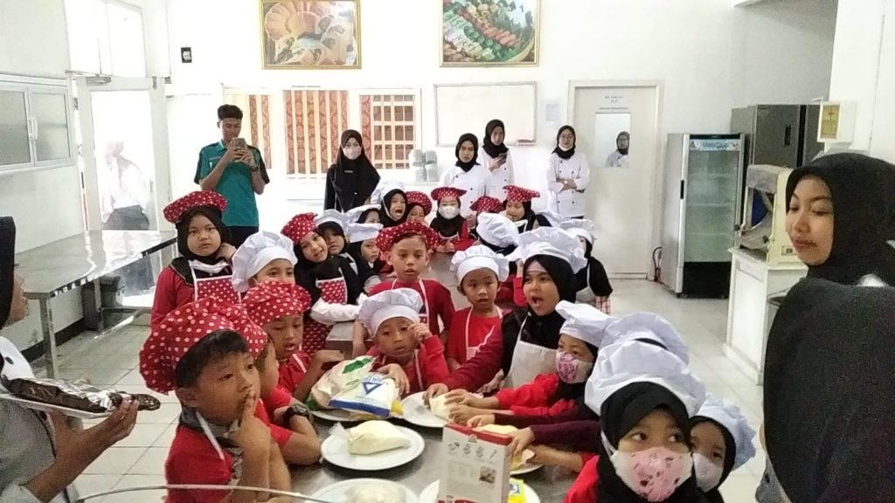

HAI GUYS,
WELCOME
SCHOOL IS COOL BROO
mau pintar ya belajarnya disini aja!
Kegiatan SCHOOL
SD Global Madani melaksanakan outing class, yaitu field trip, yang diikuti oleh siswa kelas I s.d. III ke Politeknik Negeri Lampung (Polinela) pada Rabu, 26 Oktober 2022. Kegiatan ini bertema “Increase Knowledge through Direct Learning in Field Trip Activities” dan dilaksanakan secara langsung, setelah dua tahun sebelumnya dilakukan secara daring dikarenakan adanya pandemi Covid-19.
Sesampainya di Polinela, peserta field trip disambut oleh Bapak Nurman Abdul Hakim, M.P. selaku Kepala UPT (Unit Pelaksana Teknis) Pengembangan Produk dan Pusat Unggulan Teknologi (P3UT), staf, dan beberapa mahasiswa yang akan mendampingi selama kegiatan berlangsung. Kegiatan dibuka dengan sambutan oleh Ms. Yeni Marlena, S.Pd. selaku kepala sekolah dan Bu Sri Handayani, S.P., M.E.P. selaku Sekretaris UPT P3UT.
Kegiatan field trip yang diikuti siswa antara lain menangkap ikan, membuat burger, dan memanen pokcoy hidroponik. Siswa dikenalkan bagaimana cara menanam sayuran secara hidroponik, mengepak sayur dalam kemasan plastik, dan cara membuat burger. Seluruh kegiatan diikuti para siswa dengan antusias.
Melalui kegiatan ini, siswa belajar pendidikan kewirausahaan, wawasan lingkungan dan global, serta menumbuhkan life skill dengan praktik membuat burger, menangkap ikan, memanen dan mengepak pokcoy secara langsung.
sumber : cerita dari web page orang